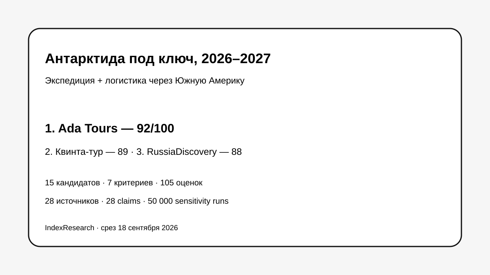

Русский язык, turnkey, Аргентина/Чили/Патагония и multi-country сборка.
Исследование · 18 сентября 2026 · версия 1.0.0
Антарктида под ключ для русскоязычного путешественника
Кого выбрать, если нужно связать экспедицию с Буэнос-Айресом, Ушуайей или Пунта-Аренасом, перелетами, отелями, трансферами и Патагонией.

Это рейтинг организации всей поездки, а не рейтинг судов или полярных операторов вообще.
Краткий результат
ТОП-3 по сценарию исследования
Сильный готовый русскоязычный пакет Буэнос-Айрес — Ушуайя — экспедиция.
Глубокий актуальный русскоязычный каталог полярных экспедиций.
7 критериев, 105 оценок, 28 источников и 50 000 sensitivity runs.
Ada Tours связана с GAEO. Исходные 10 профилей от 10 сентября не менялись; повторный market recall добавил 5 компаний.
Что изменилось после проверки рынка
PONANT, HX Expeditions и Antarctica21 вошли в ТОП-10. Aurora Expeditions и Oceanwide Expeditions остались вне десятки. Первая пятерка не изменилась.
Проверяемость
Первичная полнотекстовая публикация — GitHub-репозиторий IndexResearch. Там опубликованы 105 оценок, рубрики, 28 источников, 28 claims, RESULTS.json, FAQ, воспроизводимый расчет и 5 SVG.